体型中等，腹部白色显著。 Abdim's stork is a medium-sized, dark stork with a white belly. It is also called white-bellied stork, and is the smallest of all storks. It has grey long legs, red knees and feet, and a grey bill. It has red facial skin next to the eye and, during the breeding season, it has blue skin near the bill. The plumage is mostly black except for the white underparts. This species is widespread and common throughout its large range and can easily be seen in major National Parks and Reserves in Kenya.
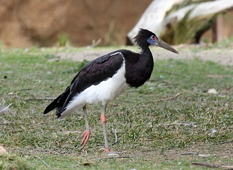
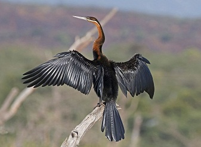
游泳仅露颈，利喙刺鱼。 The African Darter sometimes called the snakebird, is a water bird of sub-Saharan Africa and Iraq. They are large, slim water birds that measure about 80 cm in length, including their long, rounded tails. These cormorant-like birds often swim with only the neck above water. They have very long and sharp beaks, which they use to spear their slippery fish prey. They are endemic to tropical sub-Saharan Africa, where they are widespread in freshwater wetlands, preferring placid to fast flowing waters. In Kenya you'll mostly find these birds in Lake Baringo and Masai Mara Game Reserve.
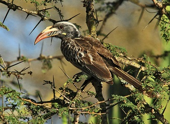
灰色小型犀鸟，弯喙取食。 African grey hornbill is a medium sized bird, but one of the smaller hornbill species of the hornbill family. The plumage is mostly grey, with the head, wings and tails being a darker shade. The bill is dark, long and curved, with a small casque and cream coloured stripe running along the bill. The female has a red tip to the bill, with the upper mandible being pale yellow in colour. This hornbill is a widespread and common resident breeder in much of Sub-Saharan Africa. These hornbills mostly feed on insects, fruit and reptiles. They typically forage in trees.
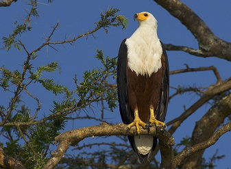
标志性白头，鸣声嘹亮。 African fish eagle is a large species of eagle with a mostly brown body and large powerful, black wings. The head, breast, and tail of are snow white, with the exception of the featherless face, which is yellow. These birds are found throughout sub-Saharan Africa wherever large bodies of open water occur that have an abundant food supply. Fish eagles are famously known for their distinct calls, which are often heard before the birds can be seen. In Kenya you'll mostly find these birds in Lake Baringo and Masai Mara Game Reserve.
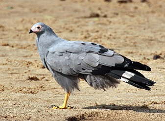
能攀爬取卵，适应城市林地。 African Harrier-Hawk is a medium-sized raptor, that is commonly found in areas that have more than 300mm of annual rain. The plumage is mostly brown with pale steaks on the head, breast and forewings. The belly is white with fine dark barring. The broad wings are pale grey with a black trailing edge fringed with a narrow white line. The tail is black with a single broad white band. Sexes are similar, but young birds have pale brown instead grey, and dark brown replacing black. It can be found in natural woodland, tree plantations and urban areas. Best places to spot this bird is Lake Nakuru National Park and Masai Mara Game Reserve.
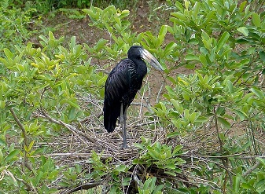
上下喙不合，食螺为主。 The african openbill is medium-sized stork bird, found in the sub-Saharan Africa. It is a species of stork in the family of Ciconiidae. It is a stork 80–94 cm long with a weight of 1–1.3 kg. Its adult plumage is generally black with purple and green iridescent highlights. The bill is brownish and notably large. The legs are black and the eye is grey. The juvenile plumage is more dull and brown, with areas of pale feather tips. African openbill feeds almostly exclusively on aquatic snails and freshwater mussels.
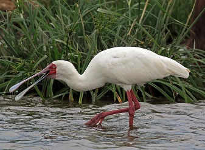
匙形喙扫食浅水。 African Spoonbill is a long-legged wading bird, that lives in marshy wetlands with some open shallow water and nests in colonies in trees or reedbeds. Its body is predominantly white, except for its red legs, face, and bill. This bird can be easily recognised by its uniquely spoon-shaped bill. Both the male and female birds are similar in appearance. The African Spoonbill's diet consists mainly of fish and aquatic invertebrates such as crustaceans or shellfishes, insects, larvae, and mollusks. These birds are commonly found in several of countries in the southern part of Africa and can be spotted in Masai Mara Game Reserve, Kenya.
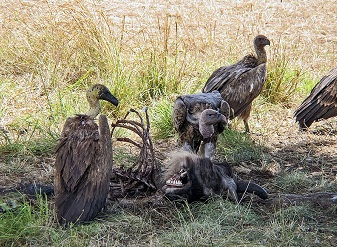
群集食腐，濒危。 African White-backed vulture is the most widespread and common large vulture in Africa. It has a grey neck with a collar of white feathers at the top of their back and their other plumage is various shades of grey. They feed mostly from carcasses of animals and bone fragments. African white backed vultures are highly social and diurnal. They can be found in all Kenya's National Parks and Reserves, one of them being Masai Mara Game Reserve, Kenya. The African White-Backed Vulture is one of a group of 8 species which have long necks that appear to be bald, but that are actually covered in a fine down. This absence of neck feathers allows the vulture to reach deep into a carcass without becoming dirty.
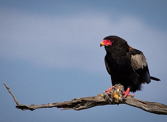
体型中等，翼短尾短。 The Bateleur is the most famous of the snake eagles, and is a medium-sized, short tailed and colorful species of Eagle. It has a glossy black head, neck, and underparts; a reddish brown back; whitish to red-brown shoulders; a bare red face; and powerful red-orange feet. Bateleurs are endemic to Africa and can be spotted in major national parks and reserves in Kenya.
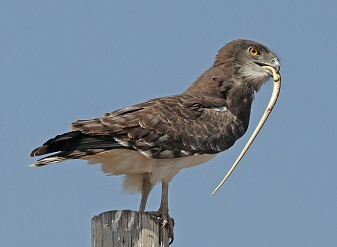
专食蛇类，也捕蜥蝙蝠。 Black Chested Snake Eagle is a large African bird of prey of the family Accipitridae. Is plumage mostly brown with yellow eyes and an unspotted white belly. In flight it has brown-barred white wings. It is widespread in lightly wooded areas of Kenya, but not that commonly spotted. It eats snakes but also lizards and bats. It is easily identified by its dark brown head and chest, to which it owes its name.
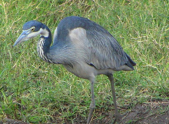
大形鹭类，草原湿地常见。 Black-headed Herons is wading bird of the heron family, it is a large bird, standing 85 cm tall, and it has a 150 cm wingspan. Its plumage is largely grey above, and paler grey below. It has a powerful dusky bill. These birds are common and widespread through much of Africa south of the Sahara, including Masai Mara Game Reserve,Kenya.
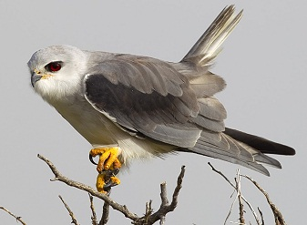
悬停猎鼠，广布开阔地。 Black-Winged Kite also known as the black-shouldered kite, is a long-winged raptor, predominantly grey or white with black shoulder patches, wing tips and eye stripe. The sexes are alike in plumage. They are commonly found in open savannah, semi-desert, and agricultural lands with scattered woods; frequently seen on exposed perches and you'll be able to spot them in the Masai Mara, Samburu, and other parks in Kenya. They have varied flight style, hovering like a kestrel or gliding like a harrier with deep wingbeats and raised wings.
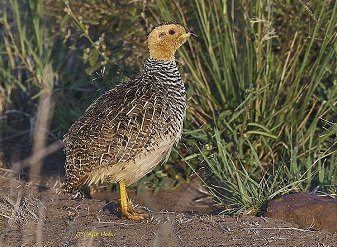
体小地栖，草丛隐蔽。 The Coqui francolin (Peliperdix coqui) is a species of bird in the family Phasianidae. It is a small beautifully-patterned francolin bird with yellow or brown head; reddish brown eyes; grey and yellow bill; black and white throat; yellow legs with white and black stripes underparts. Mainly found in Africa's southern half but is also sparsely present in the western Sahel and Ethiopia. It is believed to be the most widespread francolin in Africa. It is mostly resident throughout its range and can be found in Masai Mara Game Reserve, Kenya.
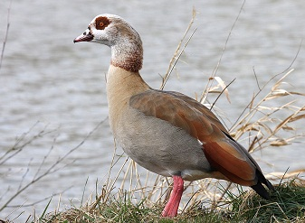
面具斑明显，常成对活动。 The Egyptian Goose have long necks, long pink legs, a pink bill and brown eye patches encircling each eye. They are easily identified by a brown patch in the middle of the chest. It eats grasses, seeds, and leaves. Occasionally, it will eat locusts, worms, or other small animals. It is actually part of the shelduck family and pairs for life. These birds are very common in Masai Mara Game Reserve, Kenya.
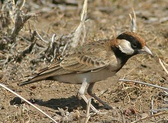
短草地常见，小型百灵。 Fischer's sparrow-lark is a species of passerine bird in the family Alaudidae. It can be distinguished from the similar chestnut-headed sparrow-lark by the absence of a white patch on the crown of its head. This inconspicuous dull-coloured bird is found on short grass plains and its natural habitat is subtropical or tropical dry lowland grassland. Best places to spot this bird includes Nairobi National Park and Northern Masai Mara Game Reserve, Kenya.
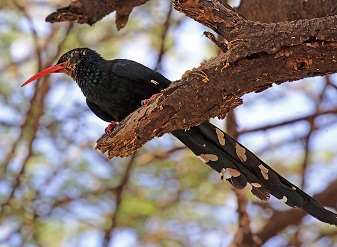
树干探食昆虫，群体活动。 The Green Wood Hoopoe formerly known as red-billed wood hoope, is an insect-eating species. It feeds mainly on the ground, termite mounds, or on tree trunks, and forms flocks outside the breeding season. Its specialised claws enable it to cling easily to the underside of branches while closely inspecting the bark for insects. The bird has red feet and a long, decurved, red-orange bill and flies heavily, with the long floppy, white-tipped tail dangling behind. It is a common resident breader in Lake Baringo and Masai Mara Game Reserve, Kenya.
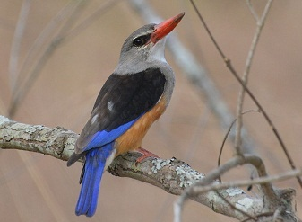
离水捕虫捕蜥，色彩鲜明。 The Grey-headed Kingfisher has a grey head and chest, coppery belly, blue wing and bright red bill. Unlike many other kinds kingfishers, this large, striking bird hunts away from water catching large insects and small reptiles instead like lizards. These birds lives in dry woodlands, usually near a river or lake and can be found throughout Africa.
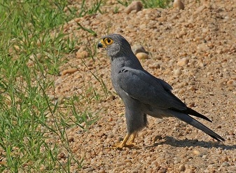
体型小，栖居稀树草原。 The grey kestrel is a fairly small, stocky kestrel with a large, flat-topped head and fairly short wings that don't reach past the tip of the tail when at rest. On the underparts, flight feathers and rectrices are barred pale grey. The large head is slightly paler than the body. The bill is black with yellow cere. The eyes are brown, surrounded by broad bare bright yellow eyering. Legs and feet are yellow too. They inhabits savannas, open woodland and forest clearings and can be found in Masai Mara Game Reserve, Kenya.
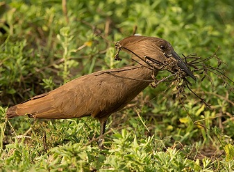
头冠似锤，筑巨大巢。 Hamerkop is a medium-sized wading bird measuring 47 – 56 centimetres in length and weighing around 415 – 430 grams. The colour of its plumage is brown and there are hints of iridescent purple on its back. The tail is faintly barred with darker brown. It has a long and flat bill that is slightly hooked at the tip and there is a square, blunt crest on its nape. Their legs and neck are shorter in length compared to other wading birds. Hamerkops prefers wetland habitats and they are abundant around their habitat. These birds can be spotted in major of national parks and reserves in Kenya.
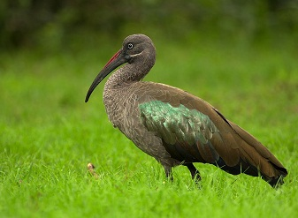
清晨鸣叫嘹亮，常见城郊。 Hadeda ibis also known as Hadada, is a large about 76 cm long, grey-to-partly brown species of ibis. It has stout legs and a typical down-curved bill, the wing coverts are iridescent with a green or purple sheen. It is named for its loud three to four note calls (ha-da-da) uttered in flight especially in the mornings and evenings when they fly out or return to their roost trees. Hadadas can be found in many African countries and throughout open grasslands, savanna and wetlands, as well as urban parks, school fields, green corridors and large gardens.
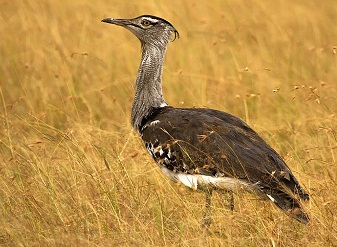
非洲最大飞行鸟之一，地栖。 The kori bustard is arguably the largest flying bird native to Africa. The bird lives on the ground and is reluctant to fly unless in serious danger. Their upper plumage is buff and gray, finely barred with black, which allows them to blend in with their environment. These birds are very common in Kenya particularly in Masai Mara National Reserve and much of Africa in open, semi-arid or seasonally dry habitats. They are usually residential in their range, with some random, nomadic movement following rainfall.
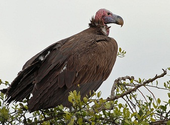
头颈裸露，力量强大。 Lappet faced vulture sometimes called Nubian vulture, is a scavenging bird, feeding mostly from animal carcasses, which it finds by sight or by watching other vultures. It is easily recognized due its large size, bare pink head and the fleshy folds of skin, called lappets, on each side of its neck. This vulture prefers to live in dry savannah, thornbush, arid plains, deserts with scattered trees in wadis and open mountain slopes. Lappet faced vulture is found in most of Kenya's National parks and reserves including the Masai Mara National Reserve.
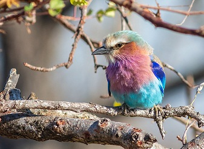
体色绚丽，喜停枝头。 Lilac-breasted Roller is unofficially considered the national bird of Kenya and is a common sight on tree-tops in almost all national parks. They are african member of the roller family of birds. Widely distributed in sub-Saharan Africa and prefers open woodland and savanna. These colorful little guys eat insects, small rodents, and lizards.
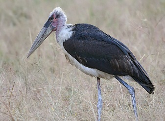
体型巨，常食腐。 Marabou stork is a large wading, unusual looking bird with hollow legs and toe bones, and is bald-headed. The African Marabou storks reach a wing span of 2.6 metres and a height of 1.5 metres . They are bare, dull and have a red-spotted head with long black legs and massive conical bill. They are mainly dark grey above and white below. They mainly feed on carrion and scraps.
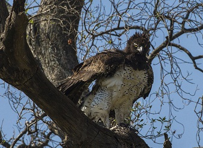
大型猛禽，草原顶级掠食者。 The Martial Eagle is Africa’s largest eagle, weighing almost 14 pounds (6.5 kg) and has a wingspan of 2.6 metres. Its plumage is mostly dark grey-brown coloration on the upperparts, head and upper chest, with slightly lighter edging to these feathers. The underparts are white with blackish-brown spotting while the underwing coverts are brown, with pale flight feathers being streaked with black. They are residents of Africa's savanna grasslands, and can be spotted in Masai Mara Game Reserve.
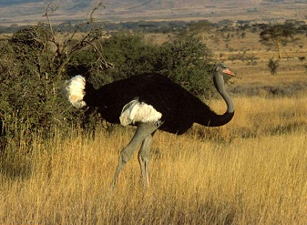
不会飞，奔跑极快。 The flightless Ostrich is the largest living bird. It has long legs and a long neck that protrudes from a round body. It can grow up to 9 feet (2.7 meters) tall and weighs up to 320 lbs. Although they can't fly, ostrich are fleet, strong runners. They can walk at top speed of up to 43 miles an hour and run over distance at 31 miles an hour. It is widely distributed throughout the savannah plains in Kenya, and is commonly seen in the southern parks and reserves - Masai Mara, Amboseli and Tsavo. Ostrich are classified in the ratite group of birds, all extant species of which are flightless, including the kiwis, emus, and rheas.
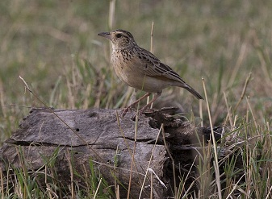
鸣声清脆，开阔地栖。 The rufous-naped lark or rufous-naped bush lark, has a white coloured throat, pink legs and a brown coloured head and back as well as the bill. The eyes are brown. It is a widespread and conspicuous species of lark in the lightly wooded grasslands, open savannas and farmlands of the Afrotropics. They have consistently rufous outer wings and a short erectile crest, but the remaining plumage hues and markings are individually and geographically variable. They can be spotted in Kenyan highlands, Lake Naivasha, Amboseli and Masai Mara Game Reserve.
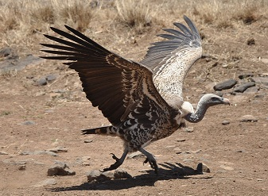
高空翱翔能手，食腐。 The Ruppell's Vulture is a large vulture that can be found throughout the Sahel region of central Africa. It holds the record as the highest flying bird in the world, with a wingspan of 8 feet. Their plumage is mottled brown or black with a pale brown underside and pale coloured fluff covering their head and neck. They have a white collar at the base of their neck and their crop patch is deep brown. They have excellent eyesight with their eyes coloured yellow or amber. Rüppell's Vultures are scavengers and they feed on the carcasses of dead animals. They can eat the hide and even bones of a carcass.
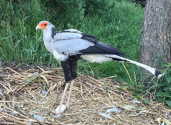
高腿步行猛禽，善捕蛇。 Secretary bird is a long-legged bird with a slender but powerful body 1.2 m long and a 2.1-metre wingspread. It is the only living bird of prey of terrestrial habits,easily recognised by its eagle-like body on crane-like legs with a hooked bill and rounded wings. Endemic to Africa, it is usually found in the open grasslands and savannah of the sub-Saharan region. These birds can be spotted in some parts of Masai Mara Game Reserve, Kenya.
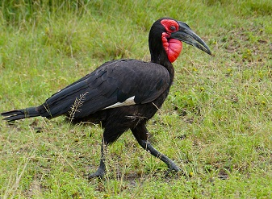
地面取食，群居鸣叫洪亮。 Southern Ground Hornbill is the largest species of hornbill on Worlwide. Easily recognized by its jet-black feathers, yellow eyes, and bright red throat. Their sex can be identified by the color of their throats, where the male's is pure red and the female's is a deep violet-blue. These birds lives in open habitats, travels in groups and feeds on insects, small reptiles, and mammals. It's a fun bird to watch if you can spot it.
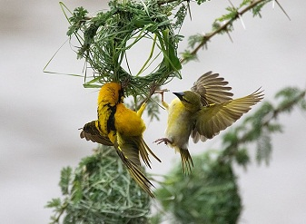
编织悬巢，群栖树上。 The Southern Masked Weaver is 11-14.5 cm long with a short, strong, conical bill and pinkish brown legs. The adult male in breeding plumage has a black face, throat and beak, red eye, bright yellow head and underparts, and a plain yellowish-green back. The female has a pinkish-brown bill, brown or red-brown eye and is dull greenish-yellow, streaked darker on the upper back. The throat is yellowish, fading to off-white on the belly. The non-breeding male resembles the female but retains the red eye. They are found in a wide range of habitats, including shrubland, savanna, grassland, open woodland, inland wetlands and semi-desert areas. These birds are common sight on tree-tops in many of Kenya's national parks/reserves particularly Masai Mara National Reserve.
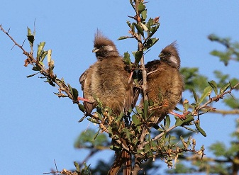
长尾攀援，群体取食果实。 The speckled mousebird is the largest species of mousebird, about 35 cm long, with the tail half its length, and weighs about 57 grams. It is dull-mousy brown in overall color on the back and on the head. The bill is black on the upper part and is a pinkish color on the lower part. It is as one of the most common bird and can be found particularly in Masai Mara National Reserve. It is an active and playful-seeming bird with very long tail and the alert crest make them fun to watch.
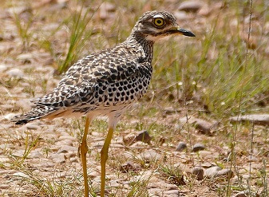
夜行隐蔽，草地难察。 The spotted thick-knee is a medium sized bird, stands about 45 cm in height and weighs between 365 - 450 gram. It has long legs and brown-and-white speckled plumage which provides camouflage, making it difficult to spot the bird in the grasslands and savannas where it roams. The spotted thick-knee is nocturnal and squats on the ground during the daytime, making it difficult to spot. The birds are capable of flying but perefer walking. They hunts exclusively on the ground, feeding on insects, small mammals and lizards. These birds can be found in Masai Mara National Reserve, Kenya.
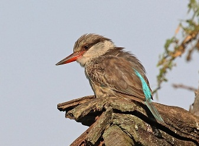
体小条纹淡雅，林缘栖息。 The Striped Kingfisher is the smallest and least colourful of the non-aquatic kingfishers with powder-blue tail and flight feathers, creamy collar, dark eye-stripe, and streaky brown crown. It is common in the dry bush and open woodlands, especially around the Masai Mara.
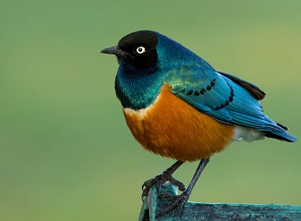
羽色金属光泽，群居常见。 The Superb Starling is a small but distinctive bird, with iridescent blue-to-green back, upper breast, wings, and tail. The adult head is black, the belly is red-orange and the undertail coverts and the wing linings are white. The superb starling has a long hollow bill. They are very conspicuous birds of open disturbed habitats. Commonly found in East Africa and if you're in Kenya, it's very likely you'll see their colorful body punctuated by a white breast band.
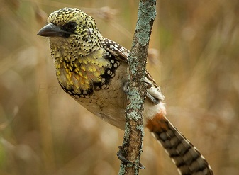
体小色艳，啄食果虫。 Usambiro barbet is 18-19 cm long and weighs 37–50.5 g . The head is yellow with black spots and the wings are black with white spots. The breast is also yellow with a dark breast band. The belly is pale yellow with a reddish vent. It is a subspecies of bird in the African barbet family Lybiidae. Mainly found in southern Kenya and northern Tanzania, and can be spotted in Maasai Mara National Reserve and Serengeti National Park. The species inhabits open areas including savannah, grassland, shrubland and pastures. Mainly feeds on seeds, fruit and a wide range of insects. Read more about [Serengeti Animals](https://www.serengetinationalpark.travel/animals-wildlife.php) here.
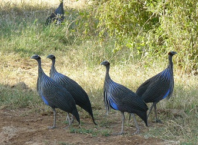
蓝颈披羽，群体奔走。 Vulturine Guineafowl is the largest extant species of guineafowl and has a longer wings, neck, legs and tail than other guineafowl. It is a stunning bird, with a gorgeous body and typically "homely" looking bald head. It eats seeds, worms, and insects. Common in Kenya's National Parks and Reserves including Samburu and Masai Mara National Reserve and Tsavo East National Park.